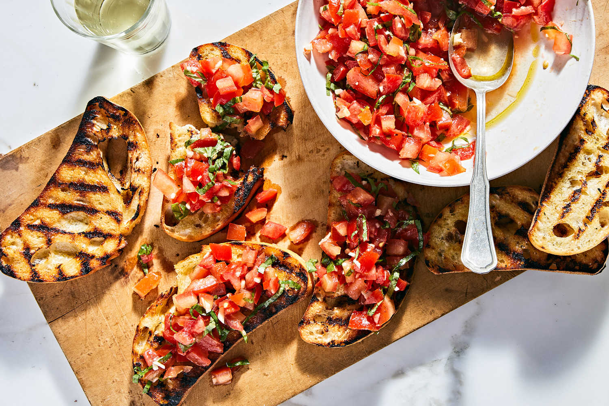

Bruschetta
Description
Bruschetta is a traditional Italian appetizer featuring toasted bread topped with a fresh mixture of tomatoes, garlic, basil, and olive oil. It's a perfect starter that highlights the flavors of fresh ingredients, ideal for any occasion.
Ingredients
For the tomato topping
- 4 ripe tomatoes, diced
- 2 cloves garlic, minced
- 1/4 cup fresh basil leaves, chopped
- 3 tablespoons extra-virgin olive oil
- 1 tablespoon balsamic vinegar (optional)
- Salt and freshly ground black pepper, to taste
For the bread
- 1 baguette or rustic Italian bread
- 1 clove garlic, halved
- 2 tablespoons extra-virgin olive oil
Steps to make Bruschetta
- Prepare the Tomato Mixture:
- In a medium bowl, combine the diced tomatoes, minced garlic, chopped basil, 3 tablespoons of extra-virgin olive oil, and balsamic vinegar (if using).
- Season with salt and freshly ground black pepper to taste.
- Stir well to combine and set aside to marinate for at least 15-30 minutes to allow the flavors to meld.
- Prepare the bread:
- Preheat your oven to 400°F (200°C) or set your broiler to high.
- Slice the baguette or Italian bread into 1/2-inch thick slices.
- Arrange the bread slices on a baking sheet.
- Brush each slice lightly with the 2 tablespoons of extra-virgin olive oil.
- Toast the Bread:
- Toast the bread in the preheated oven or under the broiler until golden brown and crispy, about 5-7 minutes. Watch carefully to avoid burning.
- Remove the toasted bread from the oven and immediately rub the cut side of the halved garlic clove over the top of each slice to impart a subtle garlic flavor.
- Assemble the Bruschetta:
- Spoon the tomato mixture evenly over each piece of toasted bread.
- Drizzle a little more extra-virgin olive oil over the top if desired.
- Garnish with additional fresh basil leaves if you like.
- Serve:
- Serve immediately while the bread is still warm and the topping is fresh.
Tips
- Tomatoes: Use ripe, flavorful tomatoes. Roma or vine-ripened varieties work well.
- Bread: A good crusty bread is essential for the best texture and flavor.
- Variations: You can add toppings like mozzarella, olives, or roasted red peppers for additional flavors.
Enjoy your authentic Italian bruschetta!